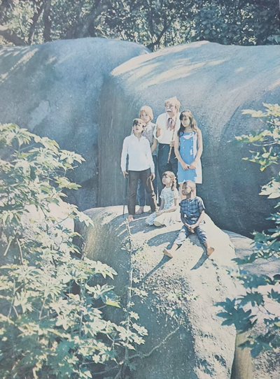
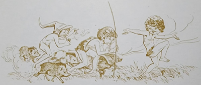
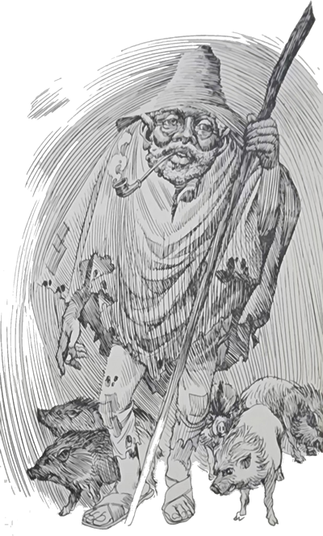
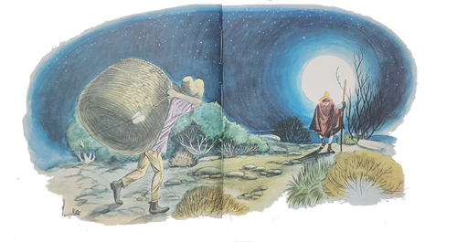
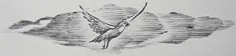
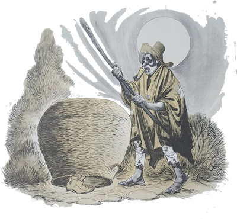
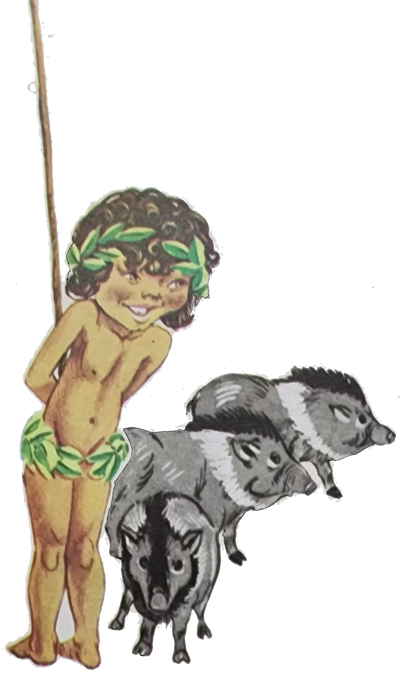
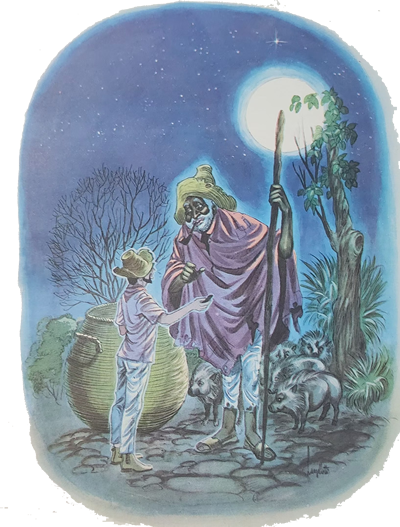
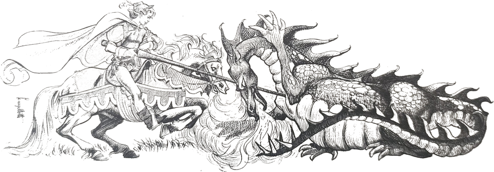
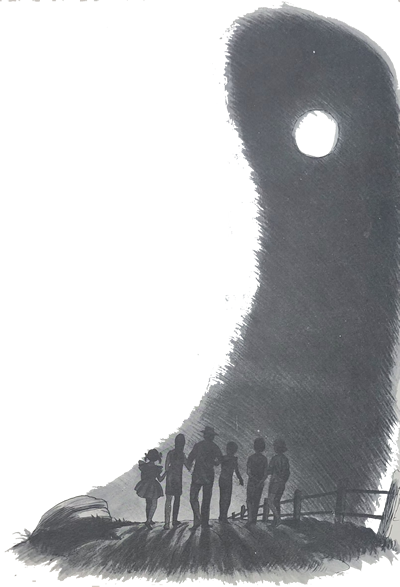

Certa noite, o Arelia e as crianças estavam ouvindo algumas estórias contadas por um dos homens do sítio, Nhô Belisário Balaio, como era conhecido, sentados todos na grande varanda. Não resistindo à curiosidade, Marisa perguntou-lhe:
- Balaio é mesmo o seu sobrenome, Nhô Belisário?
- Não, minha filha – respondeu ele, rindo. É apelido.
- E por quê?
- Ora, porque eu fazia balaios, entende? Mas isto há muito tempo. Agora, tenho o prazer de contar que fui considerado o maior cesteiro deste lugar. E por falar em balaio, você me fez lembrar de um encontro que tive com o caipora. Ah se não fosse aquele balaio . . .
- Caipora? O que é caipora? – quis saber Carlinhos, olhando para o Arrelia.
O Arrelia deu a impressão de que ia responder, mas em vez disto bocejou, tomado pela preguiça. Nhô Belisário deu a explicação:
- É um duende, um fantasma. Há várias formas de caipora. O que encontrei era um preto velho. Tinha a cabeça muito grande e os cabelos brancos; o nariz muito chato e os beiços muito grossos e vermelhos. E os olhos então? Parecia que iam saltar fora das órbitas, tão arregalados eram. Que homem feio! Também era um pouco corcunda, estava muito mal vestido, sem paletó, descalço, e trazia ao pescoço uma porção de dentes, de figas e não sei o que mais, presos a um barbante. Apoiava-se a um grosso e torto bordão e andava pesadamente.
Naquele tempo, eu ainda não trabalhava neste sítio. Morava numa casinha depois do rio, e lá fabricava os meus cestos. Uma vez por semana eu costumava ir à cidade para vender os mesmos. Aproveitava para fazer as minhas compras e voltava à minha casa antes de anoitecer, onde passava mais uma semana. Mas uma vez recebi uma encomenda especial de um fazendeiro. Ele queria um cesto bem grande e no dia marcado. Pagava bem e não vi motivo para recusar.

Como era um cesto diferente, demorei mais tempo do que havia imaginado e só terminei ao anoitecer. Já pensaram? Sair de noite é coisa que jamais gostei de fazer. Como eu não pretendia de nenhum jeito faltar à palavra, pois é uma coisa muito feia, peguei o enorme cesto e saí. Fazia uma noite bonita: quente, enluarada. A distância da minha casa à tal fazenda não era pequena e tratei de andar o mais depressa possível para não ficar muitas horas fora de casa. O que me atrapalhava era o tamanho do cesto. Cheguei a me arrepender de haver aceitado aquela encomenda. Tão grande era o bandido do cesto que me obrigava a parar aqui e ali a fim de descansar.
Eu estava com tanto medo que qualquer barulho me fazia tremer. Fui andando, andando, sem deixar de parar aqui e ali. Numa das minhas paradas, vi surgir ao longe o vulto de um preto velho segurando um cajado e andando devagar. A Lua estava bonita, muito clara, e pude ver que não era um homem comum. Nem tive dúvida de que era o caipora. Vinha praguejando que dava medo. Como vocês devem saber, quando o caipora encontra alguém pede sempre fumo em corda. Se a pessoa satisfaz este seu desejo, está salva. Caso contrário, leva uma praga do caipora e fica encaiporada de tal forma que nunca mais tem sorte na vida.
- E o senhor tinha fumo, Nhô Belisário? – perguntou o Arrelia com ar apreensivo.

- Não, não tinha nem um pedacinho – respondeu o outro com uma expressão de desânimo. E já viu o senhor um homem traquejado como eu sair sem um pedaço de fumo?
Ameaçando levantar-se, o Arrelia gritou:
- Então o senhor está “encaiporaudo”, não é verdade? E não há perigo de nós ficarmos também assim? Já ouvi dizer que isso pega!
- Que pega, pega – respondeu Nhô Belisário, com um ar pensativo.
Depois exclamou:
- Mas eu não fui encaiporado!
- Não? E como, se não tinha fumo? – admirou-se o Arrelia.
- Já explico. Consegui escapar graças ao cesto.
Quando percebi a aproximação do caipora, procurei encontrar a todo custo algum lugar onde me esconder. Por incrível que pareça, embora eu estivesse em pleno mato, não tinha nenhum esconderijo realmente bom. Em qualquer lugar o caipora podia descobrir-me com facilidade. Correr não ia adiantar, pois ele pode lançar uma praga e acertar a gente pelas costas. O negócio é não ser visto. Quando percebi que não tinha nenhum lugar que servisse de esconderijo, tratei de esconder-me dentro do cesto. Sentei no chão e me cobri com ele, entendem? Fiquei à espera, tremendo e suando. Se ele me houvesse visto de longe, eu estava perdido. Como não tinha outra solução, fiquei ali, naquela ansiedade. O caipora estava bem perto agora. Dava para eu ver com perfeição pelos vãos do trançado do cesto. Vinha devagar, apoiando-se pesadamente ao bordão. Quando chegou perto do balaio, parou interessado.
- Quem terá largado isso aí? – perguntou ele. Acho que vou pegar para mim.
Quando ouvi o caipora falar tal coisa, comecei a tremer mais ainda. Na minha aflição, segurei com todas as forças o balaio por dentro. O caipora deu uma sacudidela, outra e mais outra. Despois resmungou:
- Como é pesado! Parece Feito de ferro!


Tentou levantar o balaio, e eu me segurei com mais força ainda.
- Qual! – exclamou ele. É muito grande e pesado. Não dá para levar, não.
Dizendo isto, deu uma pancada com seu cajado no cesto, mas tão forte que todos os ossos do meu corpo vibraram. Não sei como o cesto aguentou. É que era bem feito, e eu tive sorte de trabalhar com capricho.
Depois da pancada o caipora afastou-se xingando e resmungando. Por não saber que havia gente dentro do balaio, não me rogou nenhuma praga e pude escapar. Assim que ele se afastou o suficiente, agarrei o cesto e saí correndo. E não é que não estava mais pesado?
- O medo torna as coisas fáceis, Nhô Belisário – comentou o Arrelia.
- Nem diga! Tão pesado tinha sido o cesto como agora era leve.
Corri o mais depressa que pude, e logo estava na fazenda. O fazendeiro que havia encomendado o cesto ficou muito contente. Notando, porém, o meu cansaço, pois eu estava com um palmo de língua fora da boca, perguntou:
- Mas o que aconteceu, Nhô Belisário? Será que o cesto pesa tanto assim?
Vendo que eu nem podia falar, mandou que me trouxessem um copo de água. Quando viu que eu estava melhor, tornou a me perguntar o que havia acontecido.

Contei o meu encontro com o caipora e tudo o mais que havia sucedido.
- Olhe, Nhô Belisário – disse o fazendeiro. Teve muita sorte de haver escapado. Mas como é que foi sair sem carregar um pedaço de fumo? Ninguém se arrisca desse modo!
- É que fumo muito pouco – respondi sem jeito.
- Mas é um perigo sair assim! – respondeu ele sacudindo a cabeça. Toda gente de juízo carrega um pedaço de fumo quando sai à noite.
Depois de algum tempo de silêncio, o fazendeiro me disse:
- O senhor vai-me desculpar, mas não posso ficar com o cesto. Ou melhor: ele vai ser queimado.
- Uai! E por quê? – perguntei admirado.
- Pois não disse que o caipora deu várias sacudidelas nele e também uma bordoada?
- É verdade. Mas ele não me rogou nenhuma praga – afirmei.
- Está certo. Porém, pelo sim, pelo não, prefiro que o balaio seja queimado. Só que vou precisar de outro igual até amanhã. Mas não tenha medo que o senhor não vai ter prejuízo, não.
Aceitei o novo trabalho, ele me pagou o primeiro cesto e mandou que alguns empregados pusessem fogo nele. Senti uma pena . . . Depois, o fazendeiro, vendo a minha cara, disse que pagaria o novo cesto em dobro para compensar. Fiquei mais animado e parti, levando desta vez um pedaço de fumo para o caso de encontrar novamente o caipora. Felizmente nada aconteceu, e quem usou o fumo fui eu.
Tão logo amanheceu, pus mãos à obra. O cesto era grande e eu tinha de andar ligeiro. Desta vez eu não queria andar por ali de noite. Nem brincando. Mas não foi possível outra vez. Apareceu uma porção de imprevistos e acabou anoitecendo. Fiquei por conta. Sair de noite! Outra vez! Podia encontrar de novo o caipora! Pensei, pensei e não vi outro jeito. Era preciso entregar o balaio. Procurei um bom pedaço de fumo, um canivete afiado, coloquei tudo no bolso e saí carregando o balaio.
Mal havia andado uns metros, dei com uma sombra e comecei a tremer. Quando eu ia pegar o pedaço de fumo, percebi que era apenas um cavalo pastando. Consegui ficar mais calmo e continuei. Eu ia que ia atento. Qualquer barulho me punha os cabelos de pé, qualquer sombra me fazia suar.

Mais ou menos na metade do caminho, vi um homem se aproximando.
- Era ele! – gritou o Arrelia.
- Não, não era – respondeu Nhô Belisário esclarecendo:
- Pensei que fosse mas não era. Apenas um homem comum que não tinha nada a ver c om o caipora. Por coincidência, ele me perguntou:
- Tem um fuminho aí, compadre?
Apavorado como eu estava, pensei que fosse o caipora e entreguei todo o pedaço do fumo.
- Que é isso, compadre? – estranhou ele. É muito fumo! Vai ficar sem nada! Quero apenas um pedacinho!
Só então notei que o homem não tinha nada do caipora. Peguei novamente o fumo, cortei o pedaço que ele queria, guardei o resto e continuei o caminho. Logo mais adiante, vi outro vulto que vinha para meu lado.
- Finalmente era o caipora! – exclamou o Arrelia.

Nhô Belisário respirou fundo e respondeu pausadamente:
- De fato. Não tinha dúvida. Mesmo de longe vi que era ele.
- E o que o senhor fez? – perguntou Carlinhos.
- O que fiz? Bem, de início parei e senti vontade de correr. Logo me lembrei que não ia adiantar nada. Pensei em cobrir-me com o cesto, como da outra vez. Também desisti, pois o caipora podia bater nele novamente, o fazendeiro ia saber e era uma vez outro cesto. E esmo o caipora podia não cair mais no conto do cesto. Parece mentira, mas só depois é que me lembrei do pedaço de fumo. O caipora já estava pertinho. Olhou para mim com seus olhos arregalados e perguntou:
- Tem um fuminho aí?
Embora eu estivesse tomado pelo medo, desta vez consegui pensar. Puxei o fumo, cortei a metade, dei a ele e guardei a outra metade no bolso, pensando que podia haver novo encontro até à casa do fazendeiro.
Ele cheirou o pedaço de fumo cuidadosamente e disse:
- Bom fumo. Muito bom. Você tem sorte, pois se não tivesse fumo ia ficar encaiporado.

Deu uma olhada no balaio mas não comentou nada. Acho que já havia esquecido a outra vez. Guardou o fumo no bolso das calças e foi embora andando pesadamente, apoiado no bordão e resmungando que dava medo.
Não esperei mais. Agarrei o cesto e toquei para a fazenda. Contei ao fazendeiro o que havia acontecido, ele me pagou dizendo:
- Viu só? Nunca mais deixe de trazer fumo quando sair à noite.
- Nem precisa dizer – respondi. Posso esquecer até a camisa, mas o fumo, nunca mais!
Tratei de voltar para casa. De vez em quando verificava se o fumo estava no meu bolso.
- E encontrou outra vez o caipora? – quis saber o Arrelia, interessado.
- Nem brinque! – exclamou Nhô Belisário, levantando-se. Felizmente, não. E depois daquela vez nunca mais saí à noite. Ver o caipora é coisa que a gente nunca esquece. Que cara!
O Arrelia também se levantou e dirigiu-se a Nhô Belisário:
- Diga-me uma coisa. Não é que eu duvide do senhor, mas o tal de caipora que encontrou não seria um pobre preto velho que por brincadeira ou por mania quis meter-lhe medo?
- Mas o que é isso, seu Arrelia? – gritou Nhô Belisário com admiração. Então não sei que estou dizendo? Era o caipora e não tem dúvida!
Vendo a exaltação do homem, o Arrelia procurou acalmá-lo:
- Está certo! Apenas pensei! Não tem dúvida!
Depois olhou para as crianças e disse-lhes:
- O que vocês acham de darmos um passeio? A noite está bonita e ainda é cedo.
As crianças levantaram-se e concordaram não com muito entusiasmo, um tanto impressionadas com a estória. Nhô Belisário sacudiu a cabeça:
- Por que vão procurar sarna? Esse negócio de sair à noite não dá certo. Vocês podem encontrar o caipora.
- Mas o que é isso? – espantou-se o Arrelia, dando risada. Nós já saímos diversas vezes à noite e jamais encontramos o caipora!

- Foi sorte – respondeu o outro. Nestas redondezas tem caipora e nunca é bom a gente facilitar.
Diante das palavras do Arrelia, as crianças animaram-se. Vendo que eles estavam decididos a sair, Nhô Belisário tirou um pedaço de fumo do bolso e disse ao Arrelia:
- Já que o senhor cismou de sair, leve pelo menos este pedaço de fumo. Não há outra arma para enfrentar o caipora.
O Arrelia não queria aceitar o pedaço de fumo. Foi tão grande, porém, a insistência do homem, que acabou por aceitá-lo, guardando-o no bolsinho do paletó. Despediram-se todos de Nhô Belisário e saíram a passeio. Logo Adiante Jaci disse ao Arrelia:
- Coitado do Nhô Belisário. Como é inicente, não é mesmo? Acreditar no caipora . . . Já que ele não está vendo, você pode jogar fora o pedaço de fumo.
O Arrelia apalpou o bolsinho e respondeu à menina:
- Não convém. Ele deu com tanta “vontaude” que não tenho coragem de jogar fora.
- Será possível, Arrelia? – espantou-se a menina. Não vá dizer que você está com medo de encontrar o caipora!
- Não! Não é bem isso! Imagine! É que . . . – disse o Arrelia, todo atrapalhado.
As crianças o olharam em silêncio. Mais confuso ainda, o Arrelia afirmou:
- Podem acreditar! Não é medo, não! Vou guardar o pedaço de fumo de lembrança! Podem crer!
- Que lembrança mais esquisita, hein, Arrelia? – disse Jaci com um ar malicioso.
